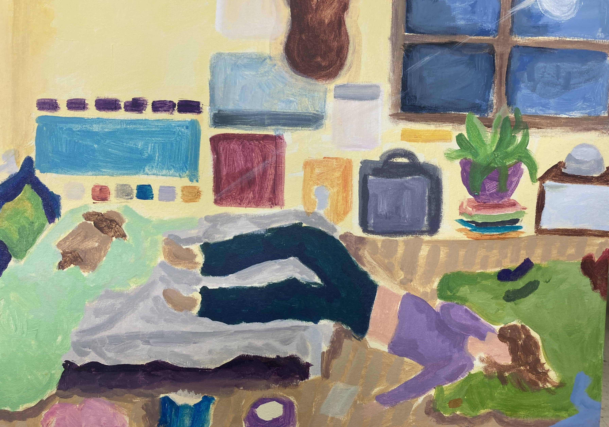

"Same As It Ever Was" x , Acrylic on canvas, 2023
This piece represents eccentricity, while also showing that with eccentricity often comes chaos and disorder. I definitely pulled inspiration from the illustrative, children's-book-drawing style that I have always adored. I wanted this piece to be somewhat childish, but not without any significance. The figure is withdrawn and dejected, but surrounded by color and light. She chooses the moonlit floor instead of the warm and inviting bed. She wants a break from all the disorder literally around her, as well as figuratively. That's what I wanted this piece to show the most. Being overwhelmed. I had a lot of fun with the styling of this piece and I discovered a color scheme that felt fitting for the illustrative, childlike quality, while also being somewhat dull at times. I used acrylic paint for this piece and applied the paint with short, rounded brushstrokes.
Progress photos/inspo
